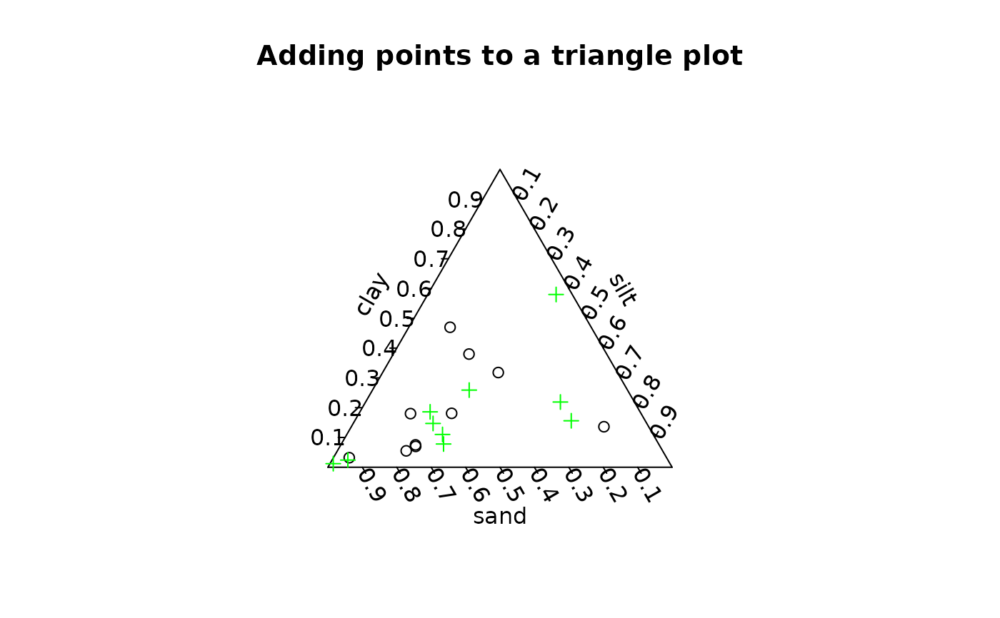

Triangle plot points
triax.points.RdDisplay points on a triangle plot.
Arguments
- x
Matrix or data frame where each row is three proportions or percentages that must sum to 1 or 100 respectively.
- show.legend
Logical - whether to display a legend.
- label.points
Logical - whether to call thigmophobe.labels to label the points.
- point.labels
Optional labels for the points and/or legend.
- col.symbols
Color of the symbols representing each value.
- pch
Symbols to use in plotting values.
- bg.symbols
Background color for plotting symbols.
- cc.axes
Clockwise or counterclockwise axes and ticks.
- ...
Additional arguments passed to points.
Details
In order for triax.points to add points to an existing plot, the argument no.add in the initial call to triax.plot must be set to FALSE. Failing to do this will result in the points being plotted in the wrong places. It is then up to the user to call par as in the example below to restore plotting parameters altered during the triangle plot.
triax.points displays each triplet of proportions or percentages as a symbol on the triangle plot. Unless each triplet sums to 1 (or 100), they will not plot properly and triax.points will complain appropriately.
Examples
data(soils)
triax.return<-triax.plot(soils[1:10,],
main="Adding points to a triangle plot",no.add=FALSE)
triax.points(soils[11:20,],col.symbols="green",pch=3)

par(triax.return$oldpar)